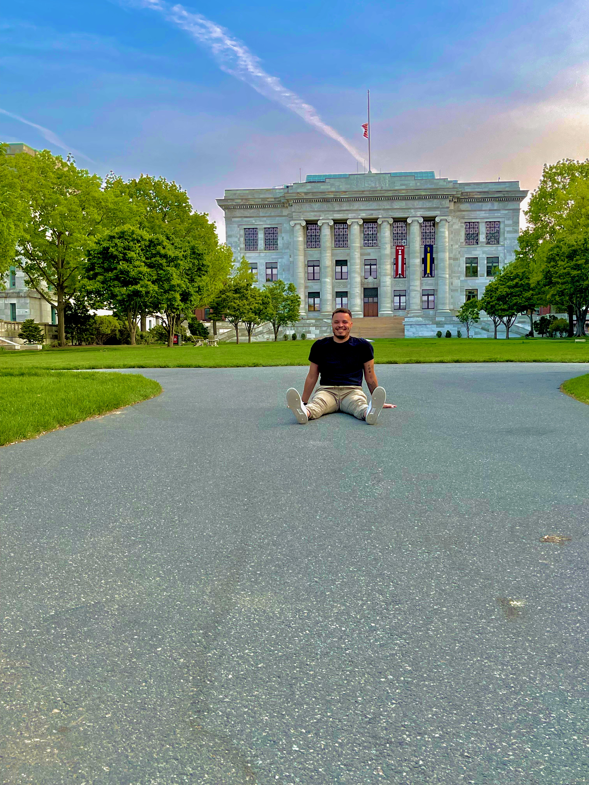
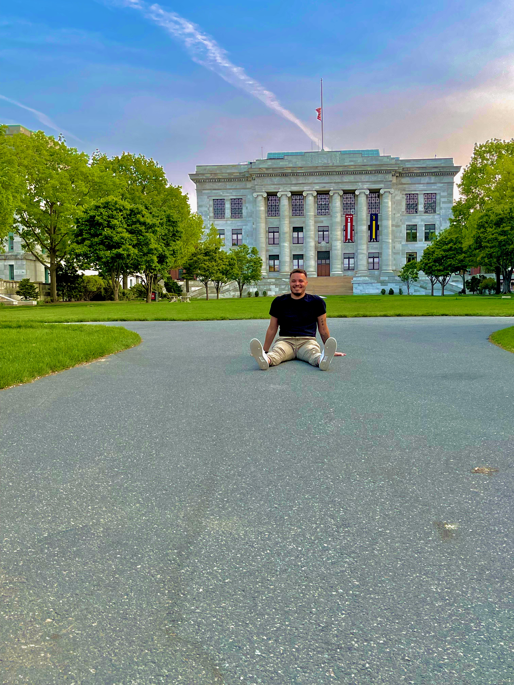

Data Scientist, Biostatistician
& Psychologist from Berlin.
 

Intro
Hi, I am Steven, born in North Rhine Westphalia and based in Berlin. When I am not analysing data full-time you will find me doing sports, gaming or travelling through the world with a slight coffee addiction.
Data Scientist. Biostatistician. Psychologist.